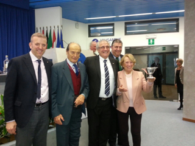

2018 - December 1
L’AVV. GABRIELE DONÀ NOMINATO PRESIDENTE DELL'UNIONE DEGLI AVVOCATI EUROPEI
- In occasione del Comitato Esecutivo dell’Unione degli Avvocati Europei (UAE), tenutosi il 1 dicembre a Lisbona, è stato eletto il nuovo “Bureau” dell’Associazione.
- L’Avv. Gabriele Donà è stato nominato Presidente dell’UAE (si vedano notizie pubblicate sulla stampa: vedasi ==>
-- (sole 24 ore)
-- (il nordest quotidiano)
-- (uae fr)
-- (uae en)
- Il prestigioso incarico durerà due anni.
==> Situs UAE
2018 - 29 ottobre
Conferenza “La giustizia europea come fattore per una più efficace tutela giudiziaria in materia tributaria” a Padova
- Si svolgerà a Padova la Conferenza “La giustizia europea come fattore per una più efficace tutela giudiziaria in materia tributaria”, organizzata dalla “Camera Avvocati Tributaristi Veneto”
(in allegato la locandina)
.
- L’Avv. Wilma Viscardini traccerà un ricordo del Prof. Trabucchi, anche in relazione alle comuni esperienze alla Corte di giustizia.
- L’Avv. Gabriele Donà parlerà sul tema “Giudice tributario e rinvio pregiudiziale alla Corte di giustizia dell’Unione europea: aspetti procedurali e casistica giurisprudenziale”.
2018 - 19 ottobre
Conferenza “Le soupçon” a Marsiglia (FR)
- Si svolgerà a Marsiglia la Conferenza internazionale “Le soupçon”, organizzata dall’Unione degli Avvocati europei (UAE)
(in allegato la locandina)
.
- L’Avv. Gabriele Donà parlerà sul tema “L'article 48 de la Charte des droits fondamentaux de l'Union Européenne”.
2018 - September 12
CONFERENCE “ACCERTAMENTO TRIBUTARIO E PROFILI PENALISTICI” in MILAN
- The conference “Accertamento tributario e profili penalistici” took place in Milan on September 12, 2018. The event was organized (among others) by the ”Ordine degli Avvocati di Milano”.
(see the brochure)
.
- Attorney Gabriele Donà spoke on the theme "The principle of ne bis in idem in the European jurisprudence. Implications for fiscal assessments”.
2018 - March 27
“Scholarship” from the Union of European Lawyers for young lawyers (deadline May 15, 2018)
- The UAE (www.uae.lu) has launched an important initiative for young lawyers (U-35) of all Member States of the European Union: to apply, candidates must submit an essay on the topic of Data Protection, in English or French, by the May 15 deadline.
- Click on the following link for more information and to participate: (https://www.scholarship-uae.lu/).
- The winner (the decision will be made by a Jury on or before May 21) will be awarded a "scholarship" which includes (inter alia): free two-yea membership in the UAE, free attendance (inclusive of travel and lodging expenses) to the next Annual Congress, which will be held in The Hague on June 15 (in the prestigious seat of the International Court of Justice) with main topic “Data Protection”.
2017 - June 17
XV STAGE ON EUROPEAN UNION LAW in ISCHIA
- The 15th Stage of European Union Law "Andrea Cafiero" will be held in Ischia, organized by the Council of the Bar Association of Naples. See the
attached poster
for the entire program.
- Attorney Gabriele Donà will talk on the theme "the implementation in Italy of Directive 2014/104/EU on actions for damages for infringements of competition law: framing and possible practical applications”.
2017 - June 17
XV STAGE ON EUROPEAN UNION LAW in ISCHIA
- The 15th Stage of European Union Law "Andrea Cafiero" will be held in Ischia, organized by the Council of the Bar Association of Naples. See the
attached poster
for the entire program.
- Attorney Gabriele Donà will talk on the theme "the implementation in Italy of Directive 2014/104/EU on actions for damages for infringements of competition law: framing and possible practical applications”.
2017 - March 16
Conference in Ferrara on preventive opposition in tax matters
- In Ferrara, Attorney Gabriele Donà intervenes at the Conference "Il contradditorio endo-procedimentale. Current Issues and Perspectives", organized by (among others), the "Unione dei giovani dottori commercialisti ed esperti contabili " of Ferrara (program attached)
programma Ferrara 16_3_2017.pdf - - - .
2016 - November 30
Attorney Wilma Viscardini and Dr. Gaetano Donà awarded the “Premio Uniteis 2016"
- At the proceedings of the General Assembly of Uniteis e.V. - which took place at "Longarone Fiere" on November 30 2016
- Attorney Wilma Viscardini and Dr. Gaetano Donà were awarded the “Premio Uniteis 2016 "for the high degree of professionalism and deep friendship demonstrated in 40 years of collaboration”.

2016 - November 21
Attorney Gabriele Donà confirmed as Vice President of the European Lawyers Union
- At the meeting of the Executive Committee of the Union of European Lawyers (UAE),
held on November 21 2016 in Luxembourg, the new “Bureau” of the Union was elected.
- Within the "Bureau", attorney Gabriele Donà has been confirmed as Vice President of the UAE (see article by Newsgroup ==> "Il Sole 24 Ore"
- The prestigious mandate will last two years.
==> Situs UAE
2016 - November 18
Continuing Education Course on diritto penale in Milano

- In Milano, Lawyer Gabriele Donà will hold a lecture on “Giudice penale e rinvio pregiudiziale alla Corte di giustizia dell’Unione europea: aspetti procedurali e recente casistica giurisprudenziale”, as part of a Course organized by the LAF - Libera Associazione Forense (see the course poster)
LAF Course in Milano.pdf - - -
2016 - September 23
Convegno in materia di diritto sportivo in Sicilia
- A Convegno on the subject of “Discriminazioni nello sport e autonomia dei privati” was held in Fiumefreddo (Catania) on September 23. The Convegno was organized by th Commissione “Diritto dello sport”and by the Delegazione “Catania e Sicilia orientale” of the UAE (see the poster).
Convegno UAE Fiumefreddo.pdf - - -
- Lawyer Gabriele Donà spoke on “I principi di non discriminazione e di libertà di circolazione degli sportivi professionisti nella giurisprudenza della Corte di giustizia dell'Unione europea”.
2016 - 24-26 June
XXX General Congress of the UAE
- The XXX General Congress of the "Union of European Lawyers" (UAE) will take place in Alba Iulia in Romania. See the attached flyers for the complete program.
Programme Alba Iulia - FR
- - -
Programme Alba Iulia - EN
- Attorney Gabriele Donà, VicePresident of the UAE will speak on "Ne bis in idem et les pouvoirs d’imposer des amendes des autorités européennes et nationales de concurrence".
2016 - May 16
Round Table in Torino on some aspects of investigative fiscal proceedings
- In Torino, Avv. Gabriele Donà speaksat the Round Table “Obbligatorietà contraddittorio endoprocedimentale. Legislazione - Corte di cassazione - Corte di giustizia”, organized by "Centro di diritto penale tributario, comunitario e delle materie collegate" of Torino
(see the conference poster)
.
2015 - Nov 20
CONFERENCE ON CRIMINAL LAW TAX IN TORINO
- In Torino, Avv. Gabriele Donà speaks at the Conference on "The reform of tax offenses (Legislative Decree no. 158/2015)", organized by the National Association of Italian Tax Attorneys" and the "Centre for criminal tax law, EU law and related disciplines" of Torino
(see the conference poster).
2015 - Nov 6
CONFERENCE ON TAX LAW IN ROVIGO

- In Rovigo the seminar on "Il ne bis in idem in ambito tributario" hosted by the Department of Political Science, Law and International Studies of the University of Padova
(See the conference poster).
- Avv. Gabriele Donà speaks on the theme "The case law of the Court of Justice of the European Union on the subject of "ne bis in idem" between criminal and administrative sanctions.
2015 - Oct 5
Convegno di diritto europeo e
internazionale in materia di immigrazione a Bari
- Si svolgerà a Bari il Convegno “Madri migranti e minori:
diritti e accoglienza - Nuove frontiere professionali per
l’avvocato europeo" promosso dalla Commissione “Famiglia”
dell’Unione degli Avvocati europei e da altri Enti indicati
nella locandina allegata
.
- L’Avv. Gabriele Donà parlerà sul tema “La giurisprudenza
della Corte di giustizia dell’Unione europea in materia
d’asilo e immigrazione: recente casistica e aspetti
procedurali”
2015 - Sep 18
Convegno tributario, fiscale,
amministrativo a Cuneo
- Si svolgerà a CUNEO il convegno "Novita' reati
tributari - responsabilita' amministrativa abuso di
diritto e frodi fiscali" promosso dal Centro Incontri
Provincia di Cuneo con il patrocinio degli Enti,
Istituzioni e Ordini indicati
nella locandina allegata
.
- L’Avv. Gabriele Donà parlerà sul tema “La giurisprudenza
della corte di giustizia dell'unione europea in materia di
ne bis in idem tra sanzioni penali e amministrative”
2015 - Jun 18-20
Congress of European Union Lawyers in Malaga
- In Malaga the annual congress of the Union of European
Lawyers (UAE). See below the program flyer.
- Lawyer Gabriele Donà, Vice President of the
UAE, will
speak Friday, June 19 on "The European Citizen on a
Personal Level."

2015 - May 29
Conference May 29, 2015 in Creazzo (VI)
- The center of criminal tax law hosts the conference
"TAX ASSESSMENT AND CRIME IN THE DAILY PRACTICE".
- Lawyer Gabriele Donà speaks on "The protection of the
taxpayer before the Court of Justice of the European Union
- Case studies".
- Lawyer Wilma Viscardini lectures on "More Community
principles for the protection of the taxpayer invocable
before a national court - Case studies".
- Here the poster of the conference.
Conference Program of Creazzo
2014 - November 29
Attorney Gabriele Donà elected as Vice President of the European Lawyers Union
- At the meeting of the Executive Committee of the Union of European Lawyers (UAE), held on November 29, 2016 in Cracovia, the new “Bureau” of the Union was elected.
- Within the "Bureau", attorney Gabriele Donà has been appointed as Vice President of the UAE
- The prestigious mandate will last two years.
==> Situs UAE
2014 - September
Attorney Wilma Viscardini awarded with the Golden Toga

- The Council of the Bar Association of Padua honors
attorney Wilma Viscardini with the "Golden Toga" in
recognition of her 50+ years of professional career.